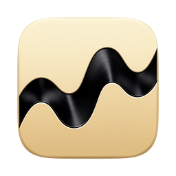

Wordmark Lockups
Approved compositions · placeholder icon (final mark pending sub-agent output)

Athena's Core
The strategist's workbench
Horizontal · dark · icon links
Athena's Core
The strategist's workbench
Horizontal · light · Bronze Ink secondary text
Athena's Core
One window · every tool
Stacked · dark · reversed mark
Athena's Core
The strategist's workbench.
macOS · Native · ~15 MB · No telemetry
Hero · dark · full lockup
In-app context
Athena · agent panel
Where the mark appears next to the workspace chat — Hanken 600, ink-in-dark
Ny x
Note: these compositions use the current icon as a placeholder. Once the new
mark is selected, swap the src in each block — no layout changes needed.
The wordmark is always Hanken Grotesk 600, ALL CAPS, tracking 0.14em; on dark it is
Attic Gold, on light it is Parchment Text with Bronze Ink for the sub-line.
Clear space: mark height = plume height on all sides.